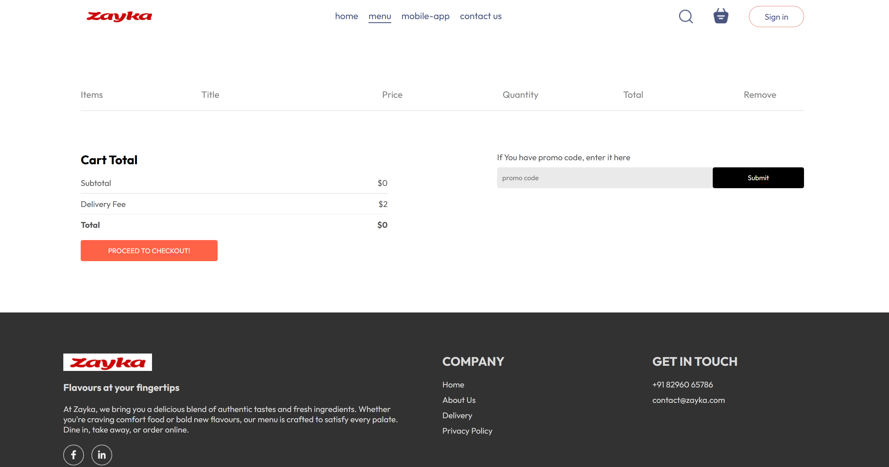
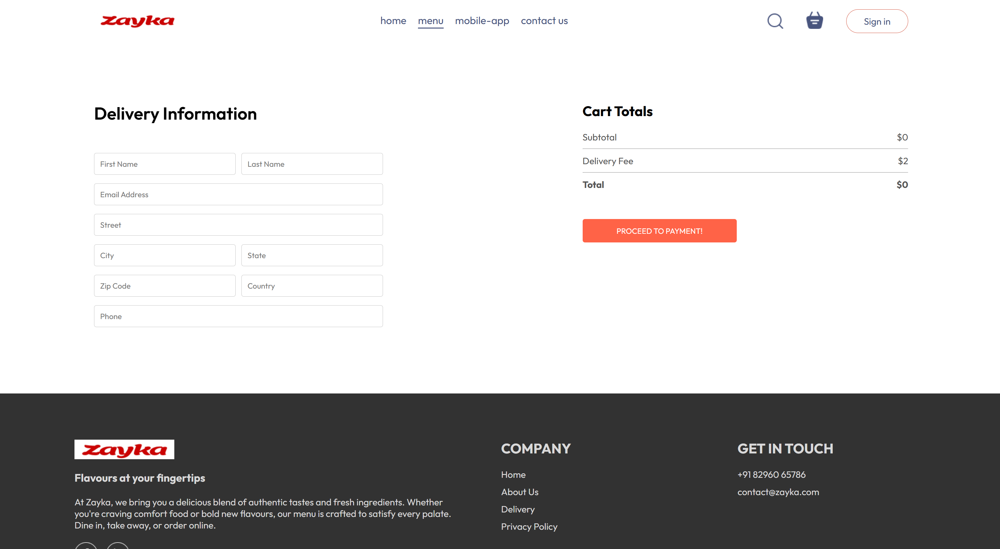
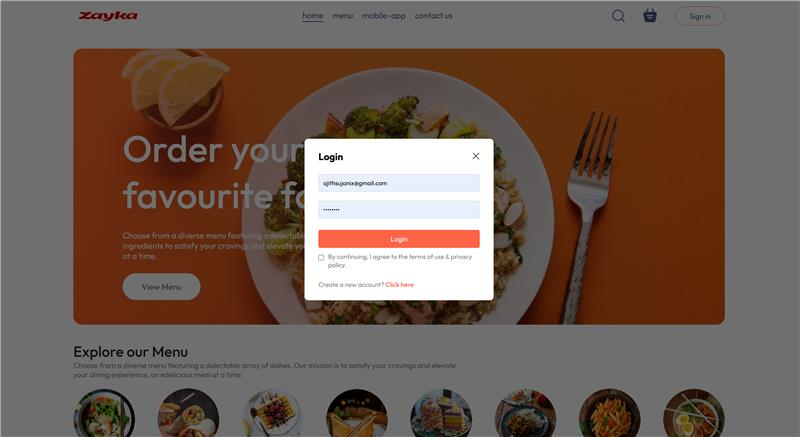

Zayka
Food Delivery Web Application — 2024
Role: Full‑Stack Developer • Tech: React, Flask, PostgreSQL Live GitHub
Overview
Zayka is a full-featured food delivery application where users can explore dishes across multiple categories, view detailed item descriptions, manage their cart, proceed to checkout with integrated payment options, and choose delivery preferences. Built with a modern full-stack architecture, Zayka ensures smooth user experience, fast API responses, and secure data handling.
offering category‑based browsing, detailed dish views, cart, checkout, and secure payments.Key Features
- Food browsing with multiple categories (North Indian, South Indian, Chinese, Desserts, etc.).
- Detailed food item views with ingredients, pricing, and images.
- Interactive cart system with add/remove/update functionality.
- Secure checkout with integrated payment gateway.
- Delivery options including doorstep delivery, scheduled delivery, and pickup.
- Optimized Flask APIs connected to PostgreSQL for fast and secure data flow.
Tech Stack & Architecture
Frontend: ReactJS (components, hooks, routing)
Backend: Flask (REST APIs), Python
Database: PostgreSQL
Other: Payment Gateway Integration, JWT Authentication, State Management
How I Contributed
- Developed full UI using React including category pages, item detail views, cart, and checkout.
- Built secure Flask APIs for authentication, cart operations, items, and orders.
- Designed PostgreSQL schemas ensuring optimized queries.
- Integrated payment gateway and delivery module.
- Ensured smooth data sync between frontend and backend for seamless UX.
- Multi‑category food browsing
- Detailed dish descriptions and pricing
- Interactive cart system
- Secure checkout with payment gateway
- Delivery options including scheduled delivery
Project Screenshots
Due to company confidentiality, certain internal UI pages cannot be shared publicly.



